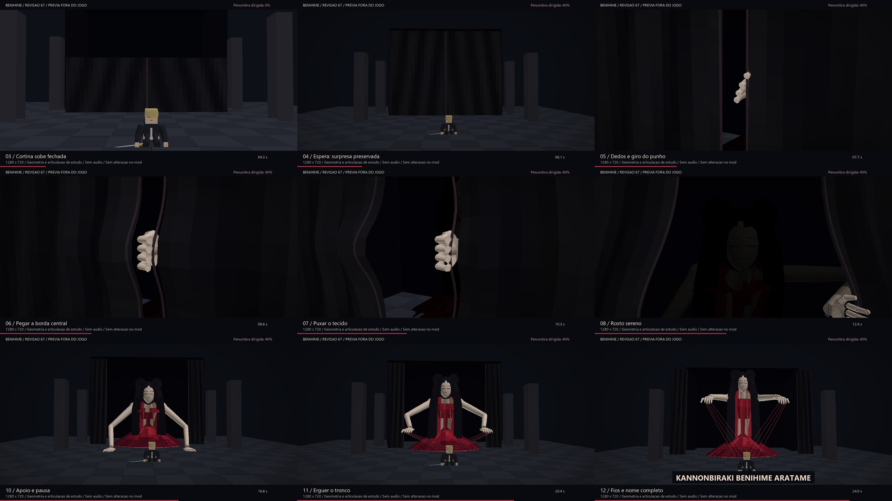
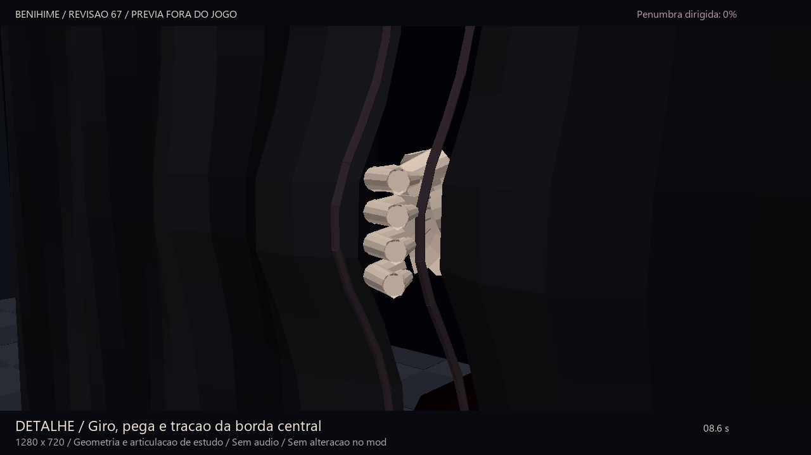
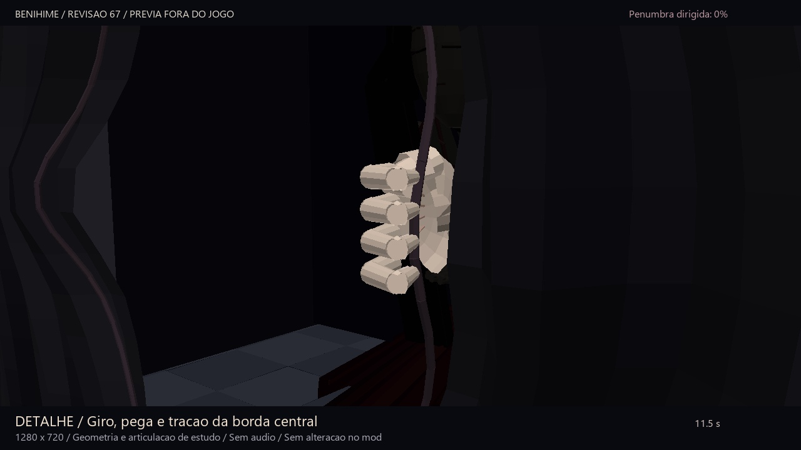

BLEACH / ESTUDO 67 / PREVIA FORA DO JOGO
Cortina fechada, gesto de pega e rosto sereno
Primeiro a cortina sobe completamente fechada. Só depois Benihime ocupa o interior, escondida. Os dedos passam pelo centro, o punho gira, a mão pega a borda e o braço puxa o tecido.
Revisão da prévia de produção. Código do mod e Zaraki intactos. Sem vozes ou novos efeitos de gameplay.
0,0 / 28,0 s
Cortina sem fresta durante a montagem e a pausa. A figura fica inteiramente escondida até o início da abertura. A penumbra dirigida da revisão anterior foi mantida.
O tecido acompanha o mesmo ponto que a mão segura. O plano próximo mostra aproximação, rotação, fechamento dos dedos, tração e soltura. Os comprimentos dos dois segmentos do braço permanecem constantes.
Revisão visual

Quadros reais da nova prévia: pano fechado, pega central e revelação. Modelo de estudo, não captura do Minecraft.
A pega em detalhe

Punho gira e dedos se fecham sobre a bainha, em vez de uma mão plana apenas deslizar para o lado.
A mão e a dobra usam a mesma âncora de contato. A iluminação do clipe permite inspecionar o gesto sem vinheta.Arquivos
Entrada MP4 · 720p Giro e pega em detalhe Rosto e cabelo GIF Roteiro e verificação